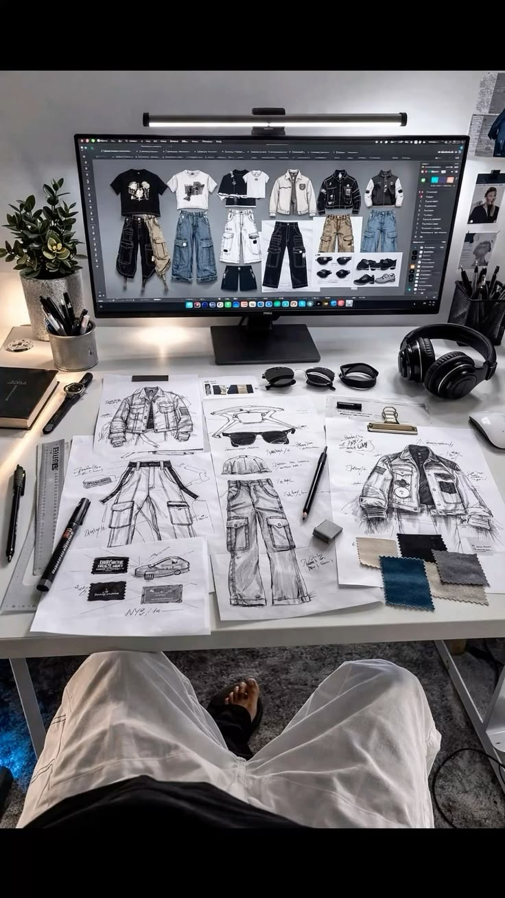
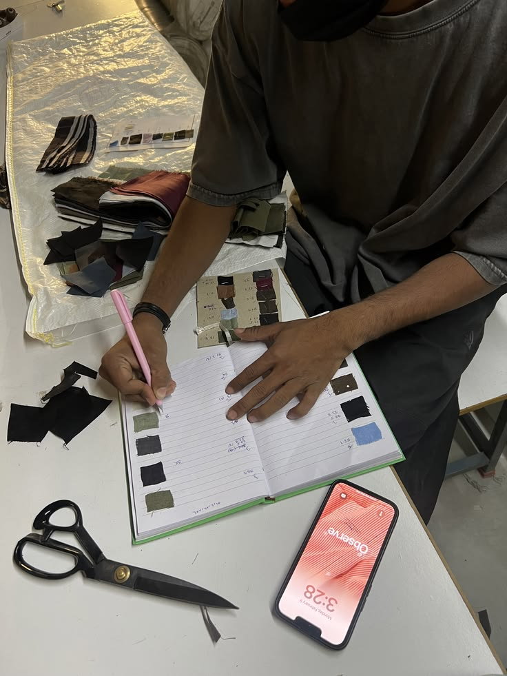
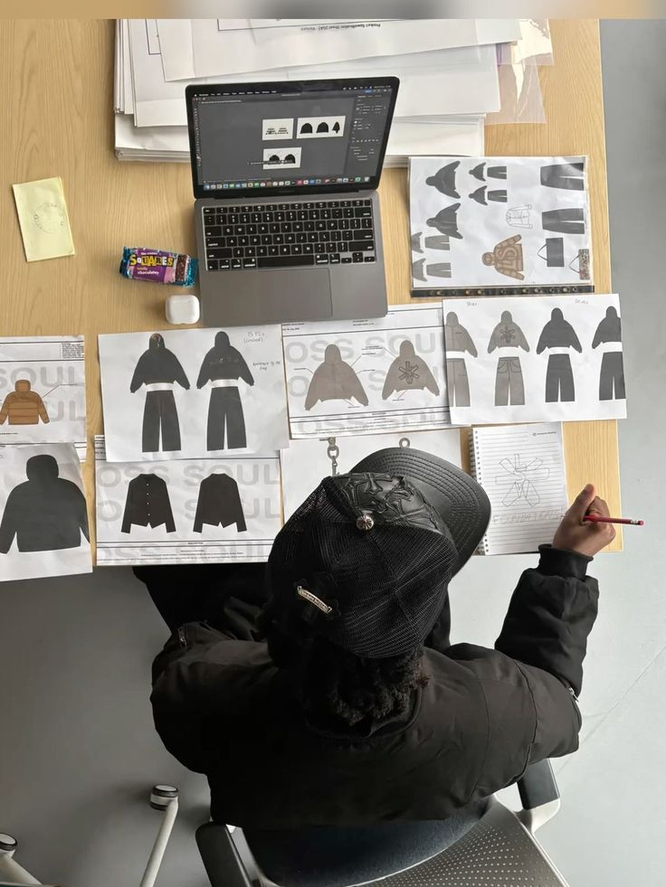

Lleva tu pasión por el anime al siguiente nivel con diseños vanguardistas y personalizados con la más alta calidad textil.
Frases y convicciones que nacen del amor a la costura artesanal y el espíritu de nunca rendirse.

«Cuando confeccionas con todo el corazón, no solo unes telas: le das vida a un sueño que alguien vestirá con orgullo y felicidad.»

«El verdadero talento no es nacer sabiendo, es negarse a rendirse y seguir perfeccionando cada corte hasta alcanzar la maestría.»

«Vístete con aquello que te haga sentir invencible. La pasión y el amor por lo que haces son la armadura más fuerte que existe.»
La unión entre la pasión por la costura y el compromiso de emprender con el corazón.